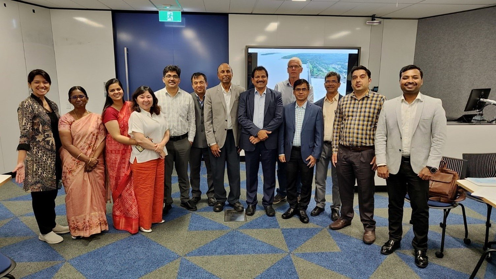

Training and Capacity Building
Dam Rehabilitation Improvement Project (DRIP II)
This collaborative project focused on knowledge exchange and capacity building to improve dam safety practices in India. The project aimed to achieve the following objectives: Enhance knowledge sharing between Indian and Australian dam safety professionals. Empower Indian dam…
Published 12 June 2025 · Updated 12 June 2025


This collaborative project focused on knowledge exchange and capacity building to improve dam safety practices in India. The project aimed to achieve the following objectives:
- Enhance knowledge sharing between Indian and Australian dam safety professionals.
- Empower Indian dam professionals with a deeper understanding of Australian best practices.
- Foster collaboration between dam safety institutions in both countries.
- Develop a framework for long-term collaboration in dam safety research, training, and knowledge exchange.
Project Activities
The project implemented a multifaceted approach to achieve its goals. Key activities included:
- Workshops and Conferences: A series of virtual and in-person workshops brought together dam safety experts from India and Australia. These sessions facilitated knowledge exchange on dam rehabilitation strategies and regulatory frameworks to stakeholder engagement, disaster management and integrating Gender, Equity, Diversity, and Social Inclusion (GEDSI) principles into dam safety management.
- Field Visits: Participants from both countries visited key dam infrastructure sites. Indian professionals observed Australian dam safety practices at dams like Warragamba Dam and Manly Dam, gaining insights into spillway design, dam operation, and SCADA system implementation. Conversely, Australian experts visited Indian dams like Bhatsa Dam, gaining firsthand experience with the challenges faced by Indian dam authorities.
- Online Resources: The project documented its activities and presentations to improve knowledge accessibility on dam safety aspects. These resources are uploaded to the Australia India Water Centre (AIWC) website and YouTube channel, creating a readily available repository for dam safety professionals in India and beyond.
- Agreement for longer-term collaboration through signing of a Memorandum of Understanding (MOU): A significant outcome was the signing of an MOU between Western Sydney University (WSU) and the Indian Institute of Technology Roorkee’s (IITR) newly established International Centre of Excellence for Dams (ICED) by the end of June 2024. This MOU will establish a framework for ongoing collaboration through joint training programs, research projects, and student and staff exchange programs. There is also an agreement to extend the MOU to include Dam Safety NSW and Water NSW for a greater partnership and collaboration between Australia and India in Dam Safety and Rehabilitation.
Outcomes and Impacts
The project has yielded several significant outcomes and lasting impacts that will resonate for years to come.
Enhanced Knowledge Sharing
- The project established a robust platform for knowledge exchange between Indian and Australian dam safety professionals. Experts from both counties shared best practices on dam rehabilitation, regulatory frameworks, stakeholder engagement, flood disaster management and GEDSI principles.
- Online resources ensure the project’s knowledge remains accessible for dam safety professionals in the future.
- The focus on GEDSI principles promoted inclusive dam management practices that consider the needs of all stakeholders.
Improved Capacity Building
- Indian dam professionals gained a deeper understanding of Australian dam safety practices through workshops, field visits, and interactive sessions.
- The project facilitated the identification of critical priorities for improvement in India’s dam safety program, such as prioritising dam safety interventions based on risk potential.
- The WSU-IITR-ICED MOU paves the way for developing the next generation of dam safety leaders through joint training programs and student exchange initiatives.
Strengthened Collaboration
- The documented project activities and online resources will continue to promote knowledge exchange beyond the project’s lifespan.
- The agreement to sign the WSU-IITR-ICED MOU formalises a long-term partnership for collaborative dam safety research, training, and project management efforts.
- The project fostered strong relationships between dam safety professionals from both countries, creating a network for ongoing communication and knowledge exchange.
Potential for Broader Benefits:
- The project’s knowledge-sharing activities can be adapted for dam safety education in Australia, incorporating Indian experiences.
- The WSU-IITR-ICED collaboration can potentially establish a global hub for dam safety expertise, offering valuable resources for professionals in India and Australia.
This project on dam safety in India stands as a successful example of Australian cooperation in addressing a critical challenge. The project has significantly improved dam safety practices in India by prioritising knowledge exchange, capacity building, and collaboration. The project’s lasting impacts will ensure the continued safety and performance of dams across India, contributing to water security and sustainable development in future. Additionally, the established framework for ongoing collaboration between India and Australia through IIT Roorkee holds immense potential for advancing dam safety practices and building capacity for both countries’ dam safety potential.